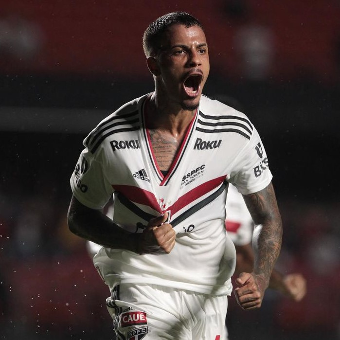

Sobre

A mais jovem agremiação dentre os grandes do futebol brasileiro, o
São Paulo FC é o clube mais vencedor do Brasil!
Fundado em 25 de janeiro de 1930 e marcado por histórias de
superação, como a refundação do clube em 1935 ou os tempos difíceis
da construção do Morumbi, o Tricolor Mais Querido do planeta é o
único clube brasileiro a ter conquistado a América e o Mundo por
três vezes. É ainda o único Tricampeão consecutivo do Campeonato
Brasileiro e o primeiro a conquistá-lo por seis vezes.
Tri-Hexacampeão Brasileiro.
Dentro das quatro linhas, foi vestindo o Manto Tricolor que o
goleiro Caxambu inventou a ponte, que Roberto Dias tornou-se o maior
marcador de Pelé, que Raí e Telê comemoraram a vitória sobre o
Barcelona, que Müller marcou o gol que fez o italiano Costacurta
perder o rumo de Milão, que Rogério Ceni passou a ser o Maior
Goleiro Artilheiro do Mundo, além de tantos outros grandes momentos
da gloriosa trajetória são-paulina!
Foi também defendendo as cores do São Paulo FC que o saltador
Adhemar Ferreira da Silva chegou ao ouro olímpico e bateu duas vezes
o recorde mundial do salto triplo, e que Éder Jofre, o Galo de Ouro
dos 50 nocautes, surgiu para os ringues que um dia estariam a seus
pés.
Fora de campo, o Tricolor desafiou os críticos e a lógica e
construiu o maior estádio particular do Brasil, o Estádio do
Morumbi. Seguiu pioneiro em sua aposta na infraestrutura como pilar
da excelência no esporte, erguendo ao longo do tempo seu Centro de
Treinamento e o Centro de Formação de Atletas. O resultado? O mundo
conheceu três vezes.
Dono de um patrimônio invejável, detentor de títulos inalcançáveis
para muitos e em movimento constante em busca da excelência, o
Tricolor Paulista faz jus a seu hino: dentre os grandes, és o
primeiro!